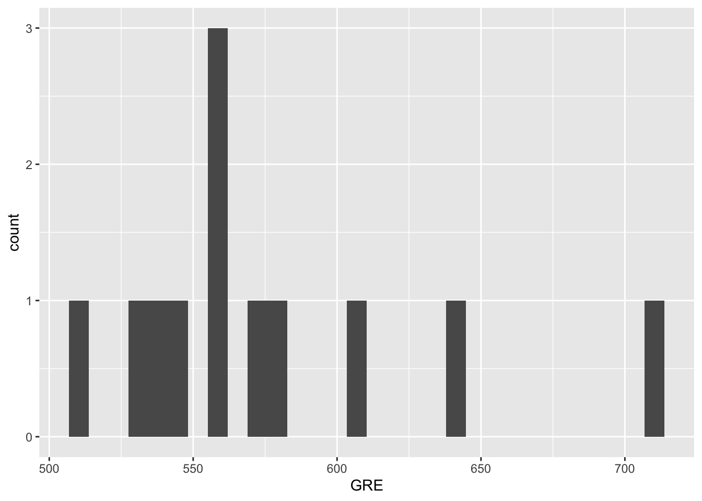

Exact binomial test
data: side_effects and n_patients
number of successes = 3, number of trials = 19, p-value = 0.004425
alternative hypothesis: true probability of success is not equal to 0.5
95 percent confidence interval:
0.03382625 0.39578455
sample estimates:
probability of success
0.1578947 NonParametric & Counting Statistics HW
- To determine if the change in the medication significantly reduced the proportion of patients experiencing side effects, we can perform a binomial test. This test compares the observed proportion of side effects in the clinical trial to the historical proportion (50%) to see if the difference is statistically significant.In Defining the problem we want our null hypothesis to be the the proportion of patients with side effects after the change is still 50% and our alternate hypothesis to be the proportion of patients with side effects after the change is less than 50%.
Given the the p-value of .004425 is below the significance value of .05, we should reject our null hypothesis and assume that the change did make a significant difference.
- To evaluate whether the two treatments have the same impact on turbidity, we can create a contingency table and use a chi-squared test for independence. Since turbidity is categorized into four groups, we can compare the distribution of observations across these groups for the two treatments.
0-15 NTU 16-22 NTU 23-30 NTU 31+ NTU
Treatment A 6 14 17 9
Treatment B 30 32 17 3
Pearson's Chi-squared test
data: cont_table
X-squared = 17.286, df = 3, p-value = 0.0006172Since the p-value for our chi-squared test is below .05, we can reject the null hypothesis that there is not a difference in impact for the two group. Since we are not given a defined expectation for treatment results, we can see below what the expected values of turbidity are using the expectation that the distribution of outcomes is determined by the the number of groups.
0-15 NTU 16-22 NTU 23-30 NTU 31+ NTU
Treatment A 12.9375 16.53125 12.21875 4.3125
Treatment B 23.0625 29.46875 21.78125 7.6875- Looking at a scatter plot and histogram of the data, there is an indication that the data may be non-normal or heteroscedastic (especially in regards to the right end/higher scores on the scatter plot). Running a Bartlett test on our two variables, we get a p-value of .423 which allows us to accept the Bartlett null hypothesis that the variance is constant. For testing normality, we can use a Shapiro-Wilk’s test, which gives a p-value of .068 which, being greater than .05, allows us to accept the null hypthesis that the data is normally distributed. With these thing in mind, we can run a pearson correlation on our data, which gives a p-value of .018 and allows us to reject our null hypothesis that there is no correlation between GPA and GRE scores and assume rather that there is a correlation between the two.
Call:
lm(formula = GRE ~ GPA, data = gpa_gre)
Residuals:
Min 1Q Median 3Q Max
-57.842 -24.848 -9.777 28.297 82.827
Coefficients:
Estimate Std. Error t value Pr(>|t|)
(Intercept) 111.25 165.16 0.674 0.516
GPA 128.98 45.68 2.824 0.018 *
---
Signif. codes: 0 '***' 0.001 '**' 0.01 '*' 0.05 '.' 0.1 ' ' 1
Residual standard error: 42.65 on 10 degrees of freedom
Multiple R-squared: 0.4436, Adjusted R-squared: 0.388
F-statistic: 7.974 on 1 and 10 DF, p-value: 0.01804
Breusch Pagan Test for Heteroskedasticity
-----------------------------------------
Ho: the variance is constant
Ha: the variance is not constant
Data
-------------------------------
Response : GRE
Variables: fitted values of GRE
Test Summary
----------------------------
DF = 1
Chi2 = 0.6417285
Prob > Chi2 = 0.4230856
Shapiro-Wilk normality test
data: gpa_gre$GRE
W = 0.87164, p-value = 0.06856- Since the “Treatment” variable is ordinal (categorized A, B, C, and D), we would like to utilize a non-parametric ANOVA test like the Kruskal-Wallis Test to determine whether different treatments influence seed yields. Running the test for seed yield by treatment type, the resulting p-value of 1.141e-05 is below the significance value of .05, which allows us to reject our null hypothesis that treatment does not impact yield and assume that it does in fact affect seed output.
Kruskal-Wallis rank sum test
data: seeds$Seeds by seeds$Treatment
Kruskal-Wallis chi-squared = 25.629, df = 3, p-value = 1.141e-05